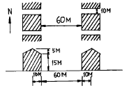
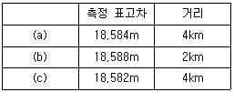
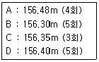
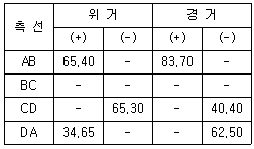
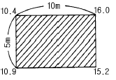
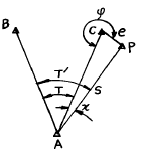

도시계획기사 (2004-09-05 기출문제)
1과목: 도시계획론
1. 다음 중 도로에 대한 설명으로 가장 거리가 먼 것은?
- 도시계획시설로서의 도로는 폭원4m 이상으로서 일반의 교통에 공용되는 도로를 말한다.
- 보행자전용도로는 폭원 1.5m 이상이어야 한다.
- 자전거전용도로는 폭원 1.2m 이상이어야 한다.
- 주간선도로간의 간격은 1,000m 내외이어야 한다.
(정답률: 알수없음)

2. 다음 중 제 3세계의 도시화의 특성이 아닌 것은?
- 종주도시화
- 농촌인구의 도시로의 이동
- 과잉도시화
- 공식부문의 확대
(정답률: 알수없음)
3. 순위의 규모법칙(rank-size rule)이 정확하게 성립할 경우, 가장 큰 도시의 인구를 상위 5개 도시의 인구로 나누어 수위도시 집중도를 나타내는 수위도(PI: Primacy Index)의 값을 구하면 얼마가 되는가?
- 0.348
- 0.384
- 0.438
- 0.538
(정답률: 알수없음)
4. 다음 중 교통존(traffic zone)의 설정원칙으로 가장 거리가 먼 것은?
- 가급적 동질적 토지이용 포함
- 가급적 행정구역과 일치
- 가급적 간선도로를 존 경계선에 일치
- 존내 통행량을 최대화되게 구획
(정답률: 알수없음)
5. 다음 중 도시의 내부구조를 설명하는 이론이 아닌 것은?
- 동심원이론
- 선형이론
- 중심지이론
- 다핵이론
(정답률: 알수없음)
6. 다음 중 도시에 있어서 가장 기초적인 지역사회 단위를 가리키는 용어로써 맞는 것은?
- 생활권
- 용도지구
- 주거생활권
- 근린주구
(정답률: 알수없음)
7. 보전가치가 있는 특정지역의 토지소유주에게 개발권을 행사하지 못하게 하는 대신 다른 지역에서 그 개발권을 행사하게 함으로써 개인의 재산상의 손실을 보상해 주기 위해 활용하는 제도는?
- 개발권양도제도
- 개발허가제도
- 도시성장관리제도
- 성과주의지역제
(정답률: 알수없음)
8. 다음 중 도시성장의 주 요인과 거리가 먼 것은?
- 인구증가
- 소득증대
- 교통발달
- 환경친화적인 도시개발
(정답률: 알수없음)
9. 다음 중 도시의 본질을 규정할 수 있는 특징이 아닌것은?
- 인구의 구성과 직업의 구성
- 인구의 정체와 이동
- 인구의 밀도와 규모
- 인구의 이질성과 동질성
(정답률: 알수없음)
10. 다음 도시기반시설 중 도시계획시설결정을 통한 도시계획으로써만 설치가 가능한 시설로 적당한 것은?
- 자동차 및 건설기계 검사시설
- 도서관
- 시장
- 공동묘지
(정답률: 알수없음)
11. 다음 중 용도지역지구의 지정 목적으로 보기 어려운 것은?
- 용도간 혼합이용을 통한 토지효율성 제고
- 외부불경제의 차단을 통한 개인재산권의 보호
- 부적절한 토지용도의 공간적 분리
- 위생 및 안전상 필요한 최저기준의 설정
(정답률: 알수없음)
12. 다음 중 우리 나라의 조세체계상 도시자치단체의 재원이 아닌 것은?
- 지방양여금
- 국고보조금
- 주민세, 재산세
- 법인세, 교통세
(정답률: 알수없음)
13. 다음 중 유통 및 공급시설이 아닌 것은?
- 상수도
- 하수도
- 공동구
- 방송· 통신시설
(정답률: 알수없음)
14. 다음 중 도시 비공식 부문에 대한 설명으로 적합하지않은 것은?
- 일시 고용이나 준 고용상태로 존재한다.
- 후진국의 대도시 지역에서 흔히 볼 수 있는 현상이다.
- 저도시화(underurbanization)로 인한 3차산업의 부족 현상이다.
- 노점상, 행상, 접객업소 종업원 등이 종사하는 부문이다.
(정답률: 알수없음)
15. 다음 중 설명이 틀린 것은?
- 공공부문에서 재원을 마련하는 방안으로는 보통 세원을 통한 방식, 국공채발행을 통한 방식, 세외수입을 활용하는 방식으로 구분된다.
- 프로젝트 금융은 도시시설사업을 하고자 하는 사업주가 별도의 회사를 설립하여 사업에 필요한 자금을 조달하는 방법을 말한다.
- 일반적으로 내부수익률(Internal Rate of Return)이 자본비용보다 작으면 투자의 매력이 있다고 간주되고 있다.
- BOT(Build-Operate-Tranfer) 방식은 민간회사가 중앙 또는 지방정부와 공공사업의 건설을 계약하고 일정기간을 무상으로 운영한 후에 소유권을 귀속하는 방법이다.
(정답률: 알수없음)
16. 다음 중 가도시화(pseudo-urbanization)를 바르게 설명한 것은?
- 도시의 부양능력에 비해 인구적으로만 팽창된 도시화
- 도시의 시가지가 농촌 지역까지 팽창한 도시화
- 도시에서 취업의 기회를 얻지 못한 인구가 다시 농촌 지역으로 이동하는 현상
- 저밀화가 확산되어 나타나는 도시화
(정답률: 알수없음)
17. 우리나라 도시토지이용상의 문제점과 가장 거리가 먼것은?
- 급격한 지가 상승
- 토지의 실수요자 증대
- 개발이익의 불공평한 배분
- 토지이용의 비효율성
(정답률: 알수없음)
18. 다음 중 현대 도시관리 패러다임의 변화 방향과 거리가 먼 것은?
- 산출위주에서 투입위주로
- 공급자위주에서 수요자위주로
- 물량위주에서 품질위주로
- 무경쟁에서 경쟁으로
(정답률: 알수없음)
19. 도시지역의 토지가격을 결정하는 가장 중요한 요인은?
- 입지
- 비옥도
- 부지의 크기
- 지형
(정답률: 알수없음)
20. 다음 중 독시아디스의 Ekistics에서 구분한 인간거주 형태의 도시규모 순서가 바르게 나열된 것은?
- 근린주구 - 소도시 - 코너베이션 - 메트로 폴리스 - 메갈로 폴리스
- 소도시 - 근린주구 - 메트로 폴리스 - 메갈로 폴리스 - 코너베이션
- 소도시 - 근린주구 - 메트로 폴리스 - 코너베이션 - 메갈로 폴리스
- 근린주구 - 소도시 - 메트로 폴리스 - 코너베이션 - 메갈로 폴리스
(정답률: 알수없음)
2과목: 도시설계 및 단지계획
21. 다음 중 주거단지계획에서 Markus가 주장한 프라이버시 거리의 기준으로 먼 것은?
- 창과 차도의 거리 : 7.5m
- 창과 보행로의 거리 : 4.5m
- 마주보는 창의 거리 : 30.0m
- 개인정원의 깊이 : 12.0m
(정답률: 알수없음)
22. 다음 중 주거단지내의 공원· 녹지의 기능이 아닌 것은?
- 대기오염 및 수질오염을 부분적으로 정화
- 미기후 조절 가능
- 차경(借景) 기회 억제
- 화재· 홍수 등의 재난 예방과 완화
(정답률: 알수없음)
23. 주위를 10m 폭의 도로에 둘러싸인 크기 140m 絨 190m의 토지내에 60호의 주택이 들어서 있다. 이곳의 총인구 밀도는 ? (단, 호당 평균 가족수를 5인으로 한다.)
- 100 인/ha
- 113 인/ha
- 115 인/ha
- 120 인/ha
(정답률: 알수없음)
24. 다음 중 루프(loop)형 도로에 관한 서술로 옳지 않은 것은?
- 불필요한 차량의 진입이 배제된다.
- 막다른 골목(cul-de-sac)과 같은 주거환경의 안정이 확보된다.
- 우회도로가 없다.
- 막다른 골목(cul-de-sac)에 비해 도로율이 높아진다.
(정답률: 알수없음)
25. 다음 중 단지의 지형분석(地形分析)의 대상(對象)이 아닌것은?
- 인지도(認知度)분석
- 등고선(等高線)분석
- 가시도(可視度)분석
- 지형의 패턴(유형)분석
(정답률: 알수없음)
26. 다음 중 도로율 산정에 관한 사항으로 거리가 먼 것은?
- 도로율 = 도로면적 / 시가화지역면적
- 도로면적은 총 6m이상의 면적을 전 노선장으로 집계한 면적이다.
- 주거지역 도로율의 기준은 20 ∼ 30%에 해당된다.
- 상업지역 도로율의 기준은 25 ∼ 35%에 해당된다.
(정답률: 알수없음)
27. 다음 중 대형가구(大型街區, superblock)의 장점이 아닌것은?
- 통과교통을 제한하여 생활의 쾌적성을 높일 수 있다.
- 쿨데삭(cul-de-sac)이나 환형도로(loop)를 이용할 수있다.
- 도로의 교차를 없앰으로서 단위면적당 높은 도로 전면의 공지(空地)를 감소시킬 수 있다.
- 규모가 클 경우 차량교통이 원활하고 교통이 매우 복잡한 지역에 이용될 수 있다.
(정답률: 알수없음)
28. 다음 중 밀튼케인즈(Milton Keynes) 신도시계획의 주요 내용으로 거리가 먼 것은?
- 보행자도로의 평면교차
- 격자형 도로망
- 외향적 근린주구
- 약 5,000명을 단위로 한 주거지역(근린주구)
(정답률: 알수없음)
29. 다음 상점(商店)의 형태 가운데 가장 오래된 형태는?
- 시장(Market)
- 슈퍼마켓
- 백화점
- 쇼핑센타(Shopping center)
(정답률: 알수없음)
30. 다음 중 주택단지 외부공간의 조성방법 중 옳지 않은 것은?
- 장애자용 주차장은 단지 전체에 고르게 분포하도록 한다.
- 보도의 구배는 1/6 이하로 유지한다.
- 횡단보도의 최소 폭은 1.2m 정도로 한다.
- 경사로의 구배가 1/12 이상일 경우에는 난간을 설치하도록 한다.
(정답률: 알수없음)
31. 다음 그림은 평지에 조성된 아파트 단지의 도면이다. 여기에서 전면(前面) 인동계수는?

- 2.0
- 3.0
- 4.0
- 4.5
(정답률: 알수없음)
32. 다음 중 단지계획을 설명하는데 있어서 적합하지 않은 것은?
- 대지조성계획이다.
- 지침과 규제계획이다.
- 시설물의 배치까지도 포함한다.
- 밀도, 용적, 형태, 기능과 패턴 등을 마련하는 계획이다.
(정답률: 알수없음)
33. 다음 중 공동구의 설치로 인하여 발생하는 장점이 아닌것은?
- 도시미관의 향상
- 방재효율의 향상
- 설비갱신의 용이
- 초기 설치비용의 절감
(정답률: 알수없음)
34. 다음 중 단지내 진입도로 계획에 대한 설명으로 가장 거리가 먼 것은?
- 진입도로는 집산도로 또는 국지도로에 연결하는 것을 원칙으로 한다.
- 단지진입부의 원활한 교통소통을 위해 진입구를 단구간에 2개소 이상 설치하도록 한다.
- 교차의 지수(支數)는 4지 이하로 하며, 특별한 경우를 제외하고는 어긋난 교차를 하지 말고 또한 동일 선상에 설치하도록 한다.
- 교통류 상호간의 교차각은 가급적 90° 에 가깝도록 하고, 교차각 60° 이하의 굴절교차는 원칙적으로 피한다.
(정답률: 알수없음)
35. 대도시의 인구팽창에 따른 주거환경 악화를 개선하기 위한 대책의 하나로서 1928년 스타인(Clarence. S. Stein)과 라이트(Henry. W. Right)에 의하여 계획된 래드번(Radburn) 계획의 특징으로 볼 수 없는 것은?
- 주택내부의 공간 배치에 있어서 거실과 침실은 차량 접근도로쪽으로 하였다.
- 통학을 위한 보행자 도로가 주요도로와 만나는 곳은 입체교차시설을 하였다.
- 쿨데삭(Cul-de-sac)은 도로와 직각으로 교차하면서 일정간격으로 배열하였다.
- 보행자 도로는 주택 후면에 배치하는 등 슈퍼블럭 내 도로는 단일기능 도로체계로 변화하였다.
(정답률: 알수없음)
36. 다음 중 주택단지내 학교의 배치기준의 내용으로 가장 거리가 먼 것은?
- 초등학교는 근린주구 2,000 ~ 3,000세대 단위로 설치
- 소음도 80dB이하를 유지
- 중· 고등학교는 2개의 근린주구 단위에 1개소 비율로 배치
- 일조· 통풍 및 배수가 잘 되는 지역에 설치
(정답률: 알수없음)
37. 다음 중 계획대상 인접지역의 토지이용상태를 조사하는 이유를 설명한 것 중 가장 거리가 먼 것은?
- 대상단지의 토지취득여건을 조사하는데 도움이 된다.
- 대상단지의 장래 발전추이를 살피는데 도움이 된다.
- 대상단지의 개발과 관련하여 갈등을 빚을 가능성이 없는지를 조사하는데 관련이 있다.
- 대상단지의 개발 후 토지 또는 주택의 수요시장을 가늠해 보는 데 중요하다.
(정답률: 알수없음)
38. 다음 중 주거단지의 획지분할에 관한 설명 중 틀린것은?
- 단독주택지의 획지 세장비는 1:1.2 정도가 일반적이다.
- 접근성을 높이기 위해 단지의 간선가로변에 단독주택지를 배치하는 것이 좋다.
- 가구의 길이가 150m를 초과하면 중간에 3-5m 의 보행통로를 설치하는 것이 좋다.
- 주거지역의 대지최소면적은 60m2 이상이다.
(정답률: 알수없음)
39. 다음의 시설 중 이용거리가 가장 길어도 되는 것은?
- 파출소
- 슈퍼마켓
- 초등학교
- 시내버스 정류장
(정답률: 알수없음)
40. 다음 주호군 배치의 기본원칙에 대한 설명으로 가장 거리가 먼 것은?
- 평지는 집중적 활동을 위하여 계획한다.
- 입지조건 및 전체 구성의 필요에 따라 주거동의 높이와 종류 등을 적절히 선정한다.
- 주호군에서는 사람과 차량의 통과동선을 허용한다.
- 주호군은 근린주구 단위와 조화시켜 심미성과 다양성을 제고한다.
(정답률: 알수없음)
3과목: 도시개발론
41. 축척 1/25000지형도 상에서 두점 간의 거리는 5.65cm이고 축척이 다른 새로운 지도 상에서 같은 두점 간의 거리가 47.08cm이라면 이 지도의 축척은 약 얼마인가?
- 1/2000
- 1/3000
- 1/4000
- 1/10000
(정답률: 알수없음)
42. 1회 거리측정에서의 정오차가 ε 이라고 하면 같은 상황에서 같은 기기로 4회 측정하였을 경우 생기는 정오차의 크기는?
- ε
- 2ε
- 3ε
- 4ε
(정답률: 알수없음)
43. 다음 등고선의 성질중 옳지 않은 것은?
- 등고선은 절벽이나 동굴 등의 특수한 지형 외에는 합치거나 교차하지 않는다.
- 경사가 급해질수록 등고선 간격은 넓어진다.
- 등고선은 분수선과 반드시 직교하여야 한다.
- 같은 경사면에는 같은 간격의 평면이 된다.
(정답률: 알수없음)
44. 수준측량에 있어서 AB 두점간의 표고차를 구하기 위하여 (a), (b), (c) 코스로 측량한 결과 다음과 같다. 두점간의 표고차는 얼마인가?

- 18.582m
- 18.584m
- 18.586m
- 18.588m
(정답률: 알수없음)
45. 측점 A, B의 좌표가 각각 A(390,0), B(0,780)일 때 측선 AB의 방위각은?
- 102° 56′ 56″
- 108° 20′ 12″
- 116° 33′ 54″
- 121° 20′ 15″
(정답률: 알수없음)
46. 결합트래버스 측량에 있어서 노선장이 4㎞되는 장소에서 폐합비의 제한이 1/500,000 일 경우 허용되는 폐합차는 얼마인가?
- 1.25㎝
- 1.00㎝
- 0.80㎝
- 0.60㎝
(정답률: 알수없음)
47. 2점간의 거리를 측정한 결과가 다음과 같을 때 표준오차는 얼마인가?

- 1.66cm
- 2.43cm
- 3.25cm
- 3.88cm
(정답률: 알수없음)
48. 노선측량에 이용하는 삼각망으로 가장 적당한 것은?
- 유심삼각망
- 사변형삼각망
- 다중삼각망
- 단열삼각망
(정답률: 알수없음)
49. 지도의 종류 중 주제도라고 볼 수 없는 것은?
- 해도
- 도시계획도
- 식생도
- 지하매설물도
(정답률: 알수없음)
50. 지형공간정보체계에서 위상적 정보를 표현하는데는 래스터 구조와 벡터 구조가 있다. 벡터 구조가 아닌 것은?
- 스파게티 구조
- DIME 구조
- 아크-노드 구조
- GRID 구조
(정답률: 알수없음)
51. 축척 1/50000 지형도에서 3% 구배의 노선을 선정하려면 주곡선 사이에 취해야 할 도상 거리는? (단, 주곡선 간격은 20m임)
- 20.4mm
- 13.3mm
- 10.6mm
- 7.5mm
(정답률: 알수없음)
52. 지형공간정보체계의 조작처리 중 중첩분석에 대한 설명으로 옳은 것은?
- 하나의 자료층상에 있는 변량들간의 관계 분석
- 둘 이상의 자료층에 있는 변량들간의 관계분석
- 특정 위치를 에워싸고 있는 주변 지역의 특성 분석
- 일정한 패턴(Pattern)을 구성하는 선형의 특징의 상호연결 분석
(정답률: 알수없음)
53. 다음과 같은 폐합트래버스 측량결과를 얻었다. 여기서 누락된 BC의 거리를 구한 값은? (단, 오차는 없는 것으로 간주한다.)

- 29.70m
- 39.70m
- 49.70m
- 59.70m
(정답률: 알수없음)
54. 그림과 같은 직사각형 지역에 지반고 13m인 평탄한 택지를 조성하기 위하여 필요한 토공량은? (단, 지반고의 단위는 m임)

- 절토, 6.25m3
- 성토, 6.25m3
- 절토, 12.5m3
- 성토, 12.5m3
(정답률: 알수없음)
55. GPS(Global Positioning System)에 관한 설명 중 올바른 것은?
- GPS의 위치결정법에는 반송파 위상관측법만이 있다.
- L1파는 P 코드만을 변조한다.
- GPS의 구성은 우주부문, 제어부문, 사용자부문으로 나뉜다.
- L2파는 P 코드와 C/A 코드를 변조한다.
(정답률: 알수없음)
56. 거리관측에서 경사면 60m의 거리를 측정한 경우 경사보정량이 2cm로 될 때 양끝의 고저차는?
- 1.55m
- 2.⑤m
- 2.55m
- 3.⑤m
(정답률: 알수없음)
57. 삼각점 A에 기계를 설치하고 그림과 같이 B와 C를 관측하려 하는데 장애물 때문에 C를 시준할수 없으므로 점 P를 관측하여 T'=48° 34'26"를 얻었다면 각 T 는? (단, e=5m, S=1267.65m, ψ =278° 18')

- 48° 24'14"
- 48° 21'01"
- 48° 15'55"
- 48° 04'37"
(정답률: 알수없음)
58. 기지점 A~B 간을 트래버스 측량에 의하여 결합하였다. X좌표의 폐합차 = -0.15m, Y좌표의 폐합차 = +0.20m, 폐합비가 정밀도 1/11000 라면 측선길이의 합은?
- 5500m
- 2750m
- 1375m
- 688m
(정답률: 알수없음)
59. 평면측량(국지측량)에 대한 가장 올바른 설명은?
- 대지측량을 제외한 모든 측량
- 측량법에 의하여 측량한 결과가 작성된 성과
- 측량할 구역을 평면으로 간주할 수 있는 국지적 범위의 측량
- 대지측량에 비하여 비교적 좁은 구역의 측량
(정답률: 알수없음)
60. 다음의 수준측량에 대한 사항중 개인오차에 해당되는 것은 어느 것인가?
- 표척 조정의 잘못에 의한 오차
- 기포의 감도 불량
- 지구곡률 및 빛의 굴절에 의한 오차
- 온도변화에 의한 오차
(정답률: 알수없음)
4과목: 국토 및 지역계획
61. 동질지역을 구분하는 방법으로 틀린 것은?
- 부드빌의 가중지수법
- 베리의 요인분석법
- 글라손의 표준편차크기법
- 크리스탈러의 중심지체계분석
(정답률: 알수없음)
62. 제4차 국토종합계획(2000-2020)에서 "21세기 통합국토"의 실현을 위하여 제시한 4대 목표에 해당되지 않는 것은?
- 자연과 어우러지는 녹색국토
- 더불어 잘 사는 균형국토
- 지구촌으로 열리는 개방국토
- 고속 교통 및 정보통신망으로 연결되는 정보국토
(정답률: 알수없음)
63. 부드빌(S.Boudeville)의 지역분류에 속하지 않는 것은?
- 계획지역(Planning region)
- 경제지역(Economic region)
- 분극지역(Polarized region)
- 동질지역(Homogeneous region)
(정답률: 알수없음)
64. 많은 지방자치단체가 재원이 부족하여 개발사업을 원할히 추진하지 못하고 있다. 이에 A시의 시장은 중앙정부로부터 재원을 조달하여 예산을 확보하려고 한다. 그런데 사업에 대한 중앙의 간섭을 받지않고 독자적인 사업을 하고자한다. 어떠한 재원을 활용할 수 있는가?
- 국고보조금
- 지방교부세
- 지방양여금
- 지역개발기금
(정답률: 알수없음)
65. 결절지역(nodal region)의 권역설정과 관계가 가장 먼것은?
- 통근
- 통학
- 인구밀도
- 상품의 흐름
(정답률: 알수없음)
66. 지역계획 수립과정에서 대안평가 또는 사업의 경제적 타당성을 평가할 때, 비용-편익분석법(Cost-benefit analysis)을 사용하는데 타당성을 판단하는 다음의 방법중 틀린 것은?
- 편익/비용의 비(B/C Ratio)가 1 이상이 되어야 함
- 편익의 현재가치 합(合)에서 비용의 현재가치 합(合)을 뺀 순 현재가치(Net present value)가 0 이상이 되어야 타당함
- 타당성 있는 여러 사업 중에서는 편익/비용의 비 (B/C Ratio)가 높은 것이 절대적으로 우선권을 가짐
- 타당성 있는 여러 사업 중에서는 투자재원이 허용하면 순 현재가치(NPV)가 높은 것에 우선권을 부여함
(정답률: 알수없음)
67. 우리나라의 지역개발 계획 체계가 갖고 있는 문제점이 아닌 것은?
- 지방정부의 계획자치권의 침해
- 상위계획의 지나친 하향성과 독주성
- 토지 이용의 획일화
- 중앙정부의 통제 역할 미약
(정답률: 알수없음)
68. 도시계획의 집행과정에 대한 접근방법과 관계가 먼것은?
- 후렌드와 제솝(Freind, K. & Jessop, W.)의 전략적 선택모형
- 맥러글린(McLoughlin, B.)의 체계통제모형
- 론디넬리(Rondinelli, D.)의 순환모형
- 알렉산더(Alexander, E.)의 PPIP모형
(정답률: 알수없음)
69. 다음 중 국토계획의 성격을 가장 잘 규명한 것은?
- 지침제시형 장기계획으로 물적· 기술적 측면과 경제· 사회적 측면이 모두 포함된다.
- 토지이용 중심의 공간구조계획을 세밀히 다룬다.
- 평면적 토지이용은 물론 입체적인 형태까지도 규정한다.
- 단기계획으로 기술적인 측면이 중시된다.
(정답률: 알수없음)
70. 전국의 총고용자수 : 100,000명, 전국의 식료품 총고용자수 : 10,000명, "가"지역의 총고용자수 50,000명, "가"지역의 식료품 총고용자수 : 2,000명, 입지계수(Location quotient)를 이용하여 식료품 산업의 입지상(Location quotient)을 계산 하면 얼마인가?
- 0.8
- 0.4
- 2.5
- 1.0
(정답률: 알수없음)
71. 다음 중 제3섹터사업의 특징이 아닌 것은?
- 독립성과 기동성을 살린 사업운영이 가능하다.
- 대규모 프로젝트가 가능하다.
- 전문인력의 확보가 용이하다.
- 수익성이 낮다.
(정답률: 알수없음)
72. 국토 및 지역계획을 계획 목적이나 계획 성격으로 유형화 할 수 있다. 다음 중 계획 성격을 기준으로 국토 및 지역 계획을 유형화 것은?
- 지역간 지역계획 - 지역내 지역계획
- 국가적 지역계획 - 지역적 지방계획
- 중앙정부 지역계획 - 지방정부 지역계획
- 집행계획적 지역계획 - 종합조정적 지역계획
(정답률: 알수없음)
73. 친환경적 공간계획(국토계획, 지역계획, 도시계획)의 수단으로 적합하지 않은 것은?
- Green GNP 개념 도입
- 거대도시와 도시광역화 개발
- 압축도시(Compact City)개발
- 복합토지이용(Mixed Land use ) 도입
(정답률: 알수없음)
74. 제4차 국토종합계획에서 제시한 개방형 통합국토축이 아닌 것은?
- 환(環)남해축
- 중부내륙축
- 환(環)황해축
- 동서내륙축
(정답률: 알수없음)
75. 농업토지이용에 관한 일반이론을 통해 토지이용에 관한 최초의 규범적 이론 정립을 시도한 사람은?
- 튜넨 (Von Thnen)
- 뢰쉬 (A. Lsch)
- 그린허트 (M.L.Greenhut)
- 르퍼버 (L. leferber)
(정답률: 알수없음)
76. 성장거점이론(Growth Pole Theory)의 기초가 되는 개념으로 가장 알맞은 것은?
- 슘페터(Schumpeter)의 쇄신이론(Innovation theory)
- 베버(A. Weber)의 최소비용법 (The Least Cost Approach)
- 아이사드(W. Isard)의 이윤최대법 (Profit Maximization Approach)
- 크리스탈러(W. Christaller)의 중심지 이론 (Central Place Theory)
(정답률: 알수없음)
77. 탈산업사회(post industrial society)의 지역발전에 영향을 미치는 요인으로 볼 수 없는 것은?
- 유연적 생산체제(flexible production system)
- 포드주의(Fordism)
- 산업재구조화(industrial restructuring)
- 신산업지대(new industrial space)
(정답률: 알수없음)
78. 다음 중 도시의 수, 규모, 분포에 관한 법칙을 다루는 이론은 무엇인가?
- 크리스탈러(Christaller)의 중심지이론
- 베버(Weber)의 입지이론
- 폰 튀넨(von Th瓊nen)의 토지이용이론
- 해리스와 울먼(Harris and Ullman)의 도시공간 구조 이론
(정답률: 알수없음)
79. 수도권의 인구 억제 정책의 일환으로 그 동안 정부가 추진해온 시책이 아닌 것은?
- 수도권정비기본계획 작성
- 공영개발 사업의 확대
- 신 산업 도시 건설
- 지방 도시의 교육문화시설 확충
(정답률: 알수없음)
80. 지역소득격차를 발생시키는 외생변수가 아닌 것은?
- 1인당 소득
- 산업 구조
- 노동의 질
- 노동참여율
(정답률: 알수없음)
5과목: 도시계획관계법규
81. 국토의계획및이용에 관한 법률에 의한 도시관리계획에 포함되는 계획이 아닌 것은?
- 용도지역· 용도지구의 지정 또는 변경에 관한 계획
- 광역계획권의 장기 발전방향을 제시하는 계획
- 기반시설의 설치· 정비 또는 개량에 관한 계획
- 도시개발사업 또는 재개발사업에 관한 계획
(정답률: 알수없음)
82. 도시공원법에서 녹지를 세분할 경우 알맞게 짝지워진 것은?
- 완충녹지, 자연녹지
- 자연녹지, 생산녹지
- 생산녹지, 경관녹지
- 경관녹지, 완충녹지
(정답률: 알수없음)
83. 건설교통부장관이 개발제한구역을 조정 또는 해제할 수 있는 요건이 아닌 것은?
- 개발제한구역에 대한 영향평가결과 보존가치가 낮게 나타나는 곳으로서 도시용지의 적정한 공급을 위해 필요한 지역
- 도시의 정체성 확보 및 적정한 성장관리를 위하여 개발을 제한할 필요가 있는 지역
- 주민이 집단적으로 거주하는 취락으로서 주거환경 개선 및 취락정비가 필요한 지역
- 도시의 균형적 성장을 위하여 도시기반시설의 설치 및 시가화 면적 조정 등 토지이용의 합리화를 위하여 필요한 지역
(정답률: 알수없음)
84. 도시기본계획의 특성에 적합하지 않는 것은?
- 도시기본계획은 물적계획이다.
- 도시기본계획은 도시발전 방향 및 미래상을 제시하는 성격을 갖고 있다.
- 도시기본계획은 비구속적 계획이다.
- 도시기본계획 수립시의 주민참여의 형태는 공청회를 취하고 있다.
(정답률: 알수없음)
85. 주택법상 주택종합계획을 수립하기 위한 사항에 포함되지 않는 것은?
- 주택정책의 기본목표 및 기본방향에 관한 사항
- 주택· 택지의 수요· 공급 및 관리에 관한 사항
- 주택의 노후도 정도 및 현황에 관한 사항
- 주택의 리모델링에 관한 사항
(정답률: 알수없음)
86. 노외주차장에 설치할 수 있는 부대시설이 아닌 것은?
- 관리사무소
- 자동차관련수리 판매시설
- 노외주차장 운영상 필요한 편의시설
- 간이 매점 및 자동차의 장식품점
(정답률: 알수없음)
87. 지구단위계획에 관한 기술로 틀린 것은?
- 지구단위계획구역 및 지구단위계획은 도시관리계획으로 결정한다.
- 기반시설부담구역의 전부 또는 일부에 대하여 제1종 지구단위계획구역을 지정할 수 있다.
- 지구단위계획은 제1종지구단위계획과 제2종지구단위 계획으로 구분한다.
- 계획관리지역 또는 개발진흥지구를 체계적· 계획적으로 개발 또는 관리하기위하여 용도지역의 건축물 그 밖의 시설의 용도.종류 및 규모 등에 대한 제한을 완화기 위하여 수립하는 계획은 제1종지구단위계획 이다.
(정답률: 알수없음)
88. 공익사업을위한토지등의취득및보상에관한법률상의 사업 인정으로 간주되는 택지개발촉진법상의 행정처분은?
- 택지개발계획의 승인· 고시
- 택지개발사업 실시계획의 승인· 고시
- 택지개발예정지구 지정· 고시
- 택지개발예정지구 조사
(정답률: 알수없음)
89. 개발제한구역안의 취락지구에 대한 설명 중 틀린 것은?
- 시· 도지사는 개발제한구역안에 주민이 집단적으로 거주하는 취락을 취락지구로 지정할 수 있다.
- 시· 도지사, 시장· 군수 또는 구청장은 취락지구에서 주거환경을 개선하고 도시기반시설을 정비하기 위한 취락지구정비사업을 시행할 수 있다.
- 취락지구의 지정기준은 취락을 구성하는 주택의 수가 20호 이상일 것. 다만, 다른 법률에 의한 지원사업으로 취락을 정비하는 경우에는 15호 이상으로 할 수있다.
- 취락지구정비사업을 시행하는 때에는 취락지구를 제1종지구단위계획구역으로 지정하고 취락지구의 정비를 위한 제1종지구단위계획(취락지구정비계획)을 수립하여야 한다.
(정답률: 알수없음)
90. 도시및주거환경정비법에 의한 관리처분 계획에 포함될 내용이다. 틀린 것은?
- 분양설계
- 손실보상 및 토지 등의 수용
- 보류지 등의 명세와 추산가액 및 처분방법
- 분양대상자별로 분양예정의 대지 또는 건축 시설의 추산액
(정답률: 알수없음)
91. 시설물의 부지인근에 단독 또는 공동으로 부설주차장을 설치할 수 있는 규모는?
- 100대 이하
- 200대 이하
- 300대 이하
- 400대 이하
(정답률: 알수없음)
92. 도시개발사업을 환지방식으로 시행하고자 할 경우 개발 계획수립을 위한 동의를 얻어야 할 조건으로 옳은 것은?
- 토지소유자 총수 및 토지면적의 각각 4/5이상
- 토지소유자 총수 및 토지면적의 1/3이상
- 토지소유자 총수의 1/2, 토지면적의 2/3이상
- 토지면적의 3분의 2이상에 해당하는 토지소유자
(정답률: 알수없음)
93. 수도권정비계획법상의 대규모개발사업에 해당되지 않는 것은?
- 관광지개발사업
- 도시재개발사업
- 공업용지조성사업
- 택지개발사업
(정답률: 알수없음)
94. 다음은 국토의계획및이용에관한법률상의 국토용도 구분이다. 잘못 설명된 것은?
- 농림지역:도시지역에 속하지 않는 농지법에 의한 농업진흥지역 또는 산림법에 의한 보전임지 등으로서 농림업의 진흥과 산림의 보전을 위하여 필요한 지역
- 도시지역:인구와 산업이 밀집되어 있거나 밀집이 예상되어 당해지역에 대하여 체계적인 개발· 정비·관리· 보전 등이 필요한 지역
- 관리지역: 도시지역외의 인구와 산업을 수용하기 위하여 도시지역에 준하여 체계적으로 관리하거나 농림지역으로만 전환 관리가 필요한 지역
- 자연환경보전지역: 자연환경· 수자원· 해안· 생태계· 상수원 및 문화재의 보전과 수산자원의 보호.육성 등을위하여 필요한 지역
(정답률: 알수없음)
95. 수도권정비계획법상 권역에 해당하지 않는 것은?
- 성장억제권역
- 과밀억제권역
- 성장관리권역
- 자연보전권역
(정답률: 알수없음)
96. 도시계획구역내의 사업지역에서 연면적 5000m2 의 종합병원을 건축할 경우 설치해야 할 주차장의 최소 주차대수로 맞는 것은?
- 27대
- 30대
- 34대
- 42대
(정답률: 알수없음)
97. 주민이 도시관리계획 입안을 제안할 경우 그 내용으로 적절한 것은?
- 도심 및 주거환경의 정비· 보전에 관한 사항
- 도시의 경관 및 미관의 관리에 관한 사항
- 지구단위계획 구역의 지정 및 수립에 관한 사항
- 공간구조· 생활권의 설정 및 인구의 배분에 관한사항
(정답률: 알수없음)
98. 도시개발구역의 지정절차와 효력에 관한 설명 중 틀린것은?
- 도시개발구역을 지정하고자 할 때에는 미리 주민 의견을 청취하고 관계지방의회의 의견을 들어야 한다.
- 일정한 규모이하의 면적으로 시· 도지사가 계획적인 도시개발이 필요하다고 인정되는 때에는 도시개발구역을 지정할 수 있다.
- 도시개발구역 지정권자는 도시개발구역으로 지정하고자 하는 구역안에 수용 또는 사용의 대상이 되는 토지 등이 있는 경우에는 구역지정고시에 토지 등의 세목을 포함시켜야 한다.
- 도시개발구역이 지정· 고시된 경우 당해 도시개발구역은 국토의계획및이용에관한법률에 의한 도시지역 및 제1종지구단위계획으로 결정· 고시된 것으로 본다
(정답률: 알수없음)
99. 다음 건축면적에 대한 설명 중 가장 옳은 것은?
- 건축면적은 용적율 산정에 직접적 관련성이 크다.
- 건축면적은 외벽의 바깥부분으로 둘러싸인 부분의 수평투영면적을 말한다.
- 지표면으로부터 1m이하인 부분도 건축면적의 산정에 포함된다.
- 외벽이 없으면 외곽부분의 기둥의 중심선으로 둘러싸인 부분에 대하여 건축면적을 산정한다.
(정답률: 알수없음)
100. 다음은 관광진흥법에 의한 관광지 지정의 취소 또는 그 면적의 변경시 대통령령에서 정하고 있는 경미한 면적의 변경에 속하는 사항이다. 옳지 않은 것은?
- 관광시설 계획면적의 100분의 20 이내의 변경
- 관광시설 계획 중 시설지구별 토지이용계획면적의 100분의 20 이내의 변경
- 관광시설 계획 중 시설지구별 토지이용계획면적이 2천 200제곱미터 미만인 경우에는 660제곱미터 이내의 변경
- 관광시설 계획 중 시설지구별 건축연면적의 100분의 30 이내의 변경
(정답률: 알수없음)